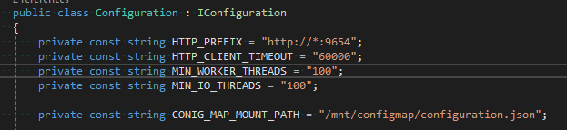
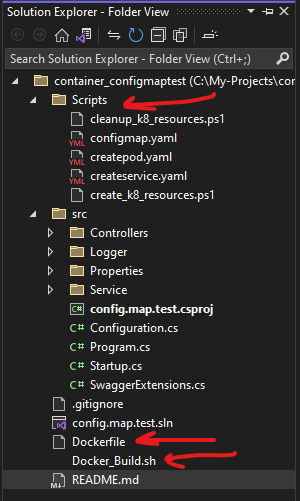
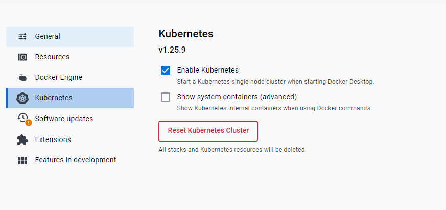
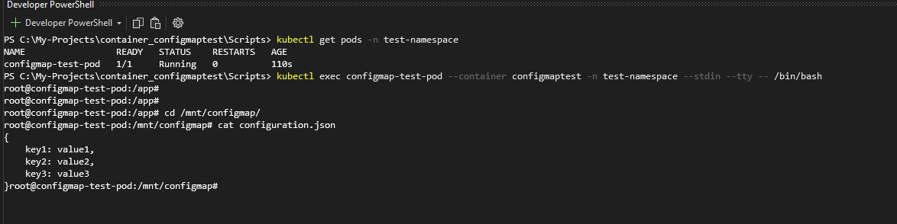

<div class="blog-post2-wrapper">
    <div class="paragraph-wrapper">
      <h1>Configuring .NET Applications with Kubernetes ConfigMaps: A Short Example</h1>
      <p>
        In today’s blog post we are going to be exploring how to utilize the Kubernetes ConfigMap Object as a means to handle application configuration
        for Kubernetes workload deployments. This blog post will feature the step-by-step instructions for creating a simple .NET application that will
        read from a ConfigMap. In Kubernetes ConfigMaps “Allow you to decouple environment-specific configuration from your container images, so that
        your applications are easily portable.” One useful context as to why this might help us day-to-day is to think of k8 deployments that require
        specific configuration based on environments. Let’s dive in to see how we can leverage a k8 ConfigMap to decouple our application configuration
        from our code.
      </p>
  
      <section>
        <h2>Background</h2>
        <p>
            What we will be diving into is creating a simple .NET application that will read a file from a specified directory.
            <br/>
            We will then containerize our application by defining a Dockerfile and generating a Docker image of the application.
            <br/>
            Next, leveraging Docker Desktop’s built-in Kubernetes functionality (you can stand up a k8 cluster locally) we will define some basic Kubernetes resources and deploy our simple .NET application into our local cluster.
            <br/>
            Our application will read from a mounted volume which contains the contents of our ConfigMap and we will be able to verify that our application can correctly read from the mounted ConfigMap by sending an HTTP GET request to an endpoint that our application will then field, read the contents at the mounted directory, and then return the response.
            <br/>
            To follow along at home (with the same demo I’m using 😊) I’ve put all the code into a GitHub Repo that can be found here: https://github.com/HappyDev95/config.map.test
        </p>
      </section>
  
  
      <section>
        <h2>Setup</h2>
        <p>
            First, we need to create a basic .NET application. Our application will be running on port 9654 and will read from the /mnt/configmap/configuration.json file.
        </p>

        <div class="image-wrapper">
          
        </div>

        <p>
            There are a couple of additional things we need to do. For brevity, I will explain the project structure and what each folder contains.
            See the below image for the project structure in Visual Studio:
        </p>

        <div class="image-wrapper">
            
        </div>

        <h3>Scripts</h3>
        <p>The scripts directory contains several yaml files with definitions to create the necessary k8 resources to run this demo.</p>
        <h3>Docker_Build.sh</h3>
        <p>The Docker_Build.sh script will build the Docker image of our application.</p>
      </section>

      <section>
        <h2>Running The Application</h2>
        <p>To run the application there a few steps. For starters, Start Docker Desktop and make sure that the Kubernetes functionality is running. This should look something like this on your local Docker Desktop</p>
        <div class="image-wrapper">
            
        </div>

        <p>
            Now that Docker Desktop and Kubernetes is running locally :
            <br/>
                1. Run the Docker_Build.sh script (this will build the container image)
                2. Run the create_k8_resources.ps1 script in the /Scripts directory to create the k8 resources (namespace, service, pod)
                3. Navigate to http://localhost:9654/swagger/index.html to view the swagger page
                4. The /api/v1/GetContentFromConfigMap endpoint will print out the contents of the k8 configmap
                5. When youre done run the cleanup_k8_resources.ps1 script to delete the namespace
        </p>
      </section>

      <section>
        <h2>Exploring The Demo</h2>
        <p>Once you’ve completed step #2 above to create the k8 resources you can run the command kubectl get pods -n test-namespace to view the pods created. Grabbing the pod name we can ssh into the container on the Pod and view the mounted file we generated via the ConfigMap.</p>
        <div class="image-wrapper">
            
        </div>
      </section>

      <section>
        <h2>Summary</h2>
        <p>
            In this short and simple example we have  we've created a basic .NET application that will read in a file that is a mounted k8 ConfigMap at the specified directory on the container.
            The configured directory points to a mounted filepath on the container running our .NET application in the Pod we've created.
            We created a service to allow us to view this Pod from our browser.
        </p>

        <h3>Why?</h3>
        <p>
            Configmaps can be a powerful tool to decouple configuration from the application. This could be useful in eliminating unwanted configurations packaged with you application. For example, as part of our Kubernetes workload we could define our ConfigMaps on a per-environment basis where each environment has their own specific ConfigMap that holds configurations specific to that environment (i.e. when we deploy to DEV our application will read from the DEV configmap, same for STG, same for PRD).
            We can also dynamically update the ConfigMap without touching the application code. No need for an extra deployment! We can simply update the ConfigMap and our the volume mounted configmap will detect the change.
            To try that our execute the command and update the configmap: kubectl edit configmap -n namespace configMapNam> -o yaml
            Repeat the previous steps of ssh-ing into the container and view the file mounted and your change should be reflected.
        </p>
      </section>
  
      <section>
        <h2>Additional Reading</h2>
        <br/>
        <a href="https://kubernetes.io/docs/concepts/configuration/configmap/">https://kubernetes.io/docs/concepts/configuration/configmap/</a>
      </section>
    </div>
  </div>
  